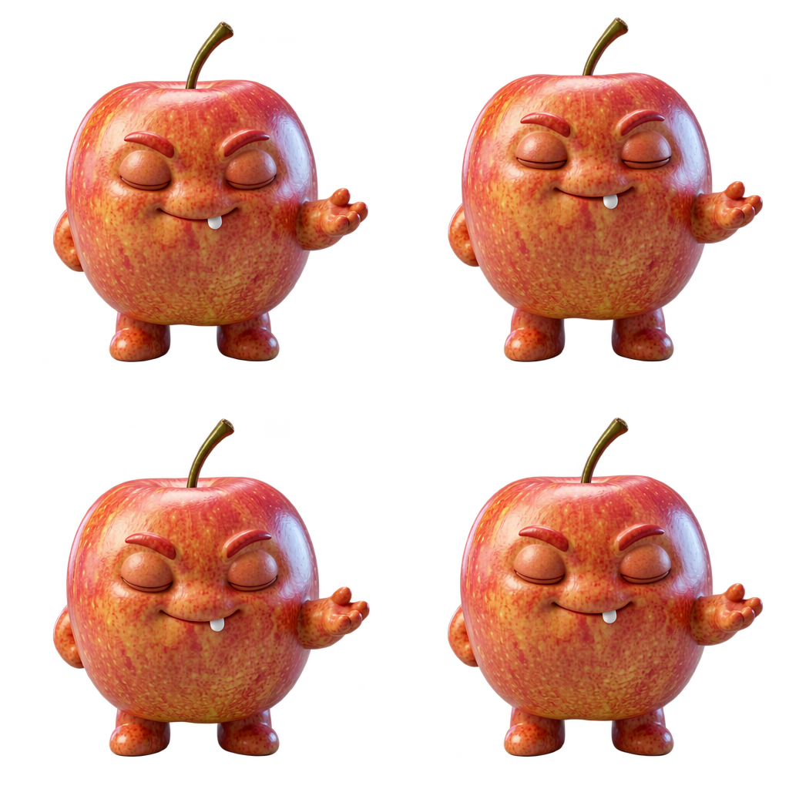
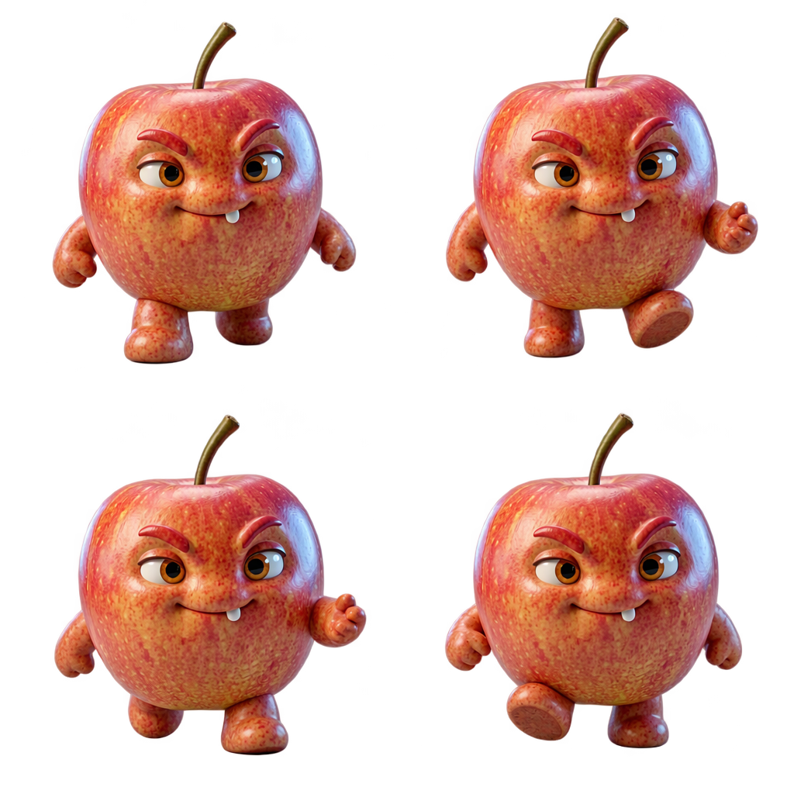
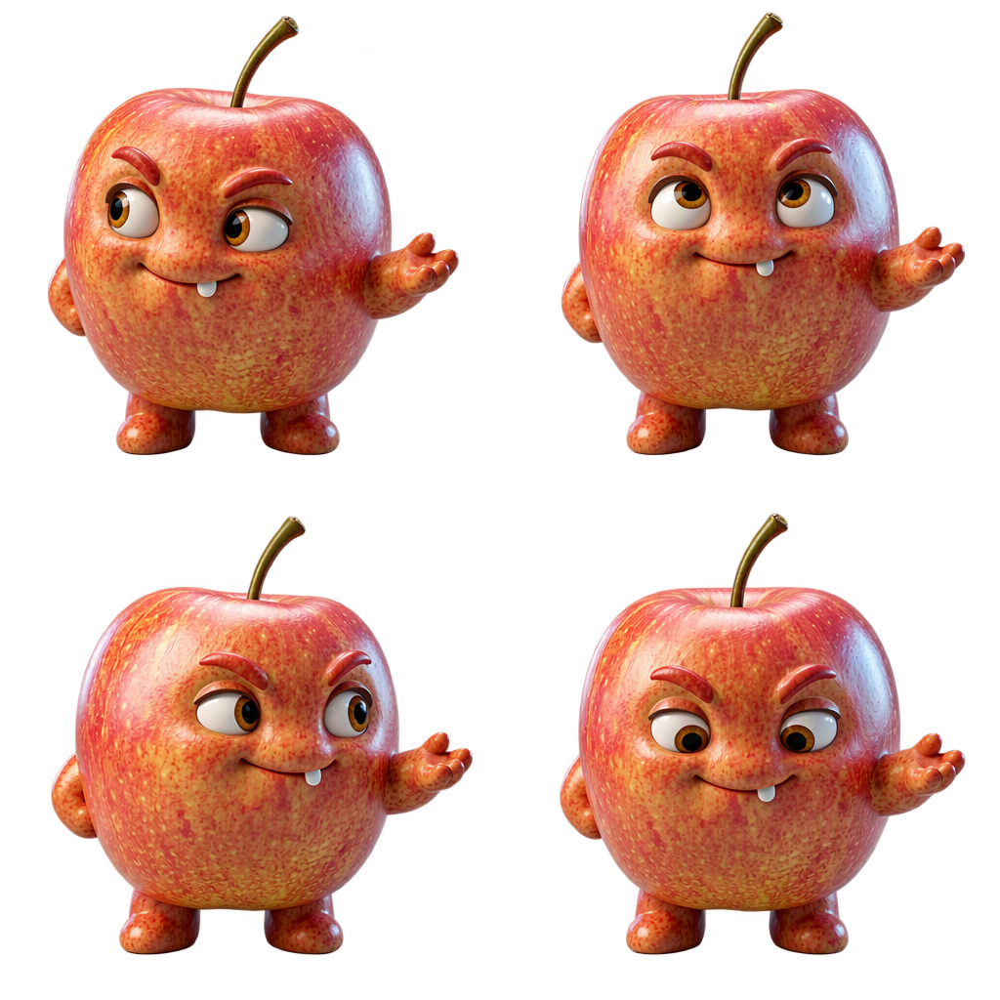

<!doctype html><html lang="zh-CN"><meta charset="utf-8"><meta name="viewport" content="width=device-width,initial-scale=1"><title>新伙伴三类真实动作 · 候选审阅</title><style>body{margin:0;padding:24px;background:#f7f3ec;color:#342b30;font:16px/1.6 system-ui}header,main,aside{max-width:1500px;margin:auto}h1{font-size:26px}main{display:grid;grid-template-columns:repeat(3,minmax(0,1fr));gap:18px;margin-top:20px}figure{margin:0;padding:16px;background:white;border:1px solid #dfd5c8;border-radius:18px}h2{margin:0 0 12px;font-size:22px}img{display:block;width:100%;height:auto;border-radius:12px}figcaption{margin-top:12px}a{color:inherit}input{margin:0 8px 0 0}#checker:checked~main img{background-color:white;background-image:linear-gradient(45deg,#e7e7e7 25%,transparent 25%),linear-gradient(-45deg,#e7e7e7 25%,transparent 25%),linear-gradient(45deg,transparent 75%,#e7e7e7 75%),linear-gradient(-45deg,transparent 75%,#e7e7e7 75%);background-size:24px 24px;background-position:0 0,0 12px,12px -12px,-12px 0}aside{margin-top:22px;display:flex;align-items:center;gap:18px}aside img{max-width:160px}small{color:#705f65}@media(max-width:800px){body{padding:16px}main{grid-template-columns:1fr}h1{font-size:22px}}</style><header><h1>苹果伙伴 · 三类真实动作候选</h1><p>三次生成已结束。请看形象是否一致、四个姿态是否完整，以及每类动作含义是否符合。</p><small>这页只供看图，不会接受候选或产生新费用。确认后再绑定和验证播放。</small></header><input id="checker" type="checkbox" checked><label for="checker">棋盘格背景（检查透明边缘）</label><main><figure><h2>休息</h2><a href="rest-真实候选.png"></a><figcaption>四帧持续闭眼，放松休息。</figcaption></figure><figure><h2>散步</h2><a href="walk-真实候选.png"></a><figcaption>左右脚交替迈步，手臂自然摆动。</figcaption></figure><figure><h2>观察</h2><a href="observe-真实候选.png"></a><figcaption>左右转头与目光变化，四处打量。</figcaption></figure></main><aside><div>已确认参考图<br><small>本批复用此图，没有新增静态生图调用。</small></div></aside></html>